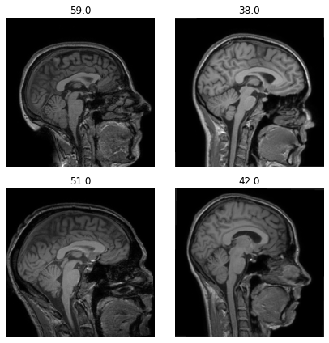
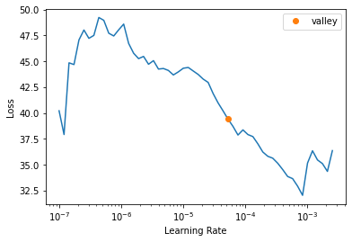
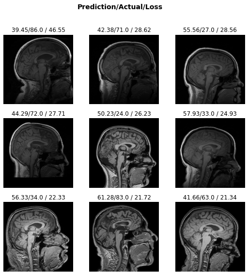

from fastMONAI.vision_all import *Regression
We will use the same data used in the classification tutorial for this task (the IXI Dataset). The approach for regression tasks is nearly identical. Therefore, take a look at the classification tutorial for explanations of the various cells.

path = Path('../data')
path.mkdir(exist_ok=True)STUDY_DIR = download_ixi_data(path=path)Images already downloaded and extracted to ../data/IXI/T1_images
2022-12-22 16:47:36,114 - INFO - Expected md5 is None, skip md5 check for file ../data/IXI/IXI.xls.
2022-12-22 16:47:36,115 - INFO - File exists: ../data/IXI/IXI.xls, skipped downloading.
Preprocessing ../data/IXI/IXI.xlsLooking at the data
df = pd.read_csv(STUDY_DIR/'dataset.csv')
df['age'] = np.around(df.age_at_scan.tolist(), decimals=0)df.head()| t1_path | subject_id | gender | age_at_scan | age | |
|---|---|---|---|---|---|
| 0 | ../data/IXI/T1_images/IXI002-Guys-0828-T1.nii.gz | IXI002 | F | 35.80 | 36.0 |
| 1 | ../data/IXI/T1_images/IXI012-HH-1211-T1.nii.gz | IXI012 | M | 38.78 | 39.0 |
| 2 | ../data/IXI/T1_images/IXI013-HH-1212-T1.nii.gz | IXI013 | M | 46.71 | 47.0 |
| 3 | ../data/IXI/T1_images/IXI014-HH-1236-T1.nii.gz | IXI014 | F | 34.24 | 34.0 |
| 4 | ../data/IXI/T1_images/IXI015-HH-1258-T1.nii.gz | IXI015 | M | 24.28 | 24.0 |
df.age.min(), df.age.max()(20.0, 86.0)med_dataset = MedDataset(path=STUDY_DIR/'T1_images', max_workers=12)data_info_df = med_dataset.summary()data_info_df.head()| dim_0 | dim_1 | dim_2 | voxel_0 | voxel_1 | voxel_2 | orientation | example_path | total | |
|---|---|---|---|---|---|---|---|---|---|
| 3 | 256 | 256 | 150 | 0.9375 | 0.9375 | 1.2 | PSR+ | ../data/IXI/T1_images/IXI002-Guys-0828-T1.nii.gz | 498 |
| 2 | 256 | 256 | 146 | 0.9375 | 0.9375 | 1.2 | PSR+ | ../data/IXI/T1_images/IXI035-IOP-0873-T1.nii.gz | 74 |
| 4 | 256 | 256 | 150 | 0.9766 | 0.9766 | 1.2 | PSR+ | ../data/IXI/T1_images/IXI297-Guys-0886-T1.nii.gz | 5 |
| 0 | 256 | 256 | 130 | 0.9375 | 0.9375 | 1.2 | PSR+ | ../data/IXI/T1_images/IXI023-Guys-0699-T1.nii.gz | 2 |
| 1 | 256 | 256 | 140 | 0.9375 | 0.9375 | 1.2 | PSR+ | ../data/IXI/T1_images/IXI020-Guys-0700-T1.nii.gz | 2 |
resample, reorder = med_dataset.suggestion()bs=4
in_shape = [1, 256, 256, 160]item_tfms = [ZNormalization(), PadOrCrop(in_shape[1:]), RandomAffine(scales=0, degrees=5, isotropic=False)]dblock = MedDataBlock(blocks=(ImageBlock(cls=MedImage), RegressionBlock),
splitter=RandomSplitter(seed=32),
get_x=ColReader('t1_path'),
get_y=ColReader('age'),
item_tfms=item_tfms,
reorder=reorder,
resample=resample)dls = dblock.dataloaders(df, bs=bs)len(dls.train_ds.items), len(dls.valid_ds.items)(449, 112)dls.show_batch(anatomical_plane=2)
Create and train a 3D model
Import a network from MONAI that can be used for regression tasks, and define the input image size, the output size, channels, etc.
from monai.networks.nets import Regressor
model = Regressor(in_shape=[1, 256, 256, 160], out_shape=1, channels=(16, 32, 64, 128, 256),strides=(2, 2, 2, 2), kernel_size=3, num_res_units=2)loss_func = L1LossFlat()learn = Learner(dls, model, loss_func=loss_func, metrics=[mae])learn.summary()Regressor (Input shape: 4 x 1 x 256 x 256 x 160)
============================================================================
Layer (type) Output Shape Param # Trainable
============================================================================
4 x 16 x 128 x 128
Conv3d 448 True
InstanceNorm3d 0 False
PReLU 1 True
Conv3d 6928 True
InstanceNorm3d 0 False
PReLU 1 True
Conv3d 448 True
____________________________________________________________________________
4 x 32 x 64 x 64 x
Conv3d 13856 True
InstanceNorm3d 0 False
PReLU 1 True
Conv3d 27680 True
InstanceNorm3d 0 False
PReLU 1 True
Conv3d 13856 True
____________________________________________________________________________
4 x 64 x 32 x 32 x
Conv3d 55360 True
InstanceNorm3d 0 False
PReLU 1 True
Conv3d 110656 True
InstanceNorm3d 0 False
PReLU 1 True
Conv3d 55360 True
____________________________________________________________________________
4 x 128 x 16 x 16 x
Conv3d 221312 True
InstanceNorm3d 0 False
PReLU 1 True
Conv3d 442496 True
InstanceNorm3d 0 False
PReLU 1 True
Conv3d 221312 True
Reshape
____________________________________________________________________________
4 x 327680
Flatten
____________________________________________________________________________
4 x 1
Linear 327681 True
____________________________________________________________________________
Total params: 1,497,401
Total trainable params: 1,497,401
Total non-trainable params: 0
Optimizer used: <function Adam at 0x7f6ed28f1e50>
Loss function: FlattenedLoss of L1Loss()
Callbacks:
- TrainEvalCallback
- CastToTensor
- Recorder
- ProgressCallbacklearn.lr_find()SuggestedLRs(valley=5.248074739938602e-05)
lr = 1e-4learn.fit_one_cycle(4)| epoch | train_loss | valid_loss | mae | time |
|---|---|---|---|---|
| 0 | 22.412138 | 47.074982 | 47.074982 | 01:14 |
| 1 | 26.331188 | 12.824456 | 12.824456 | 01:16 |
| 2 | 13.703990 | 15.106963 | 15.106963 | 01:10 |
| 3 | 9.790899 | 10.356420 | 10.356420 | 01:13 |
learn.save('brainage-weights');Inference
learn.load('brainage-weights');interp = Interpretation.from_learner(learn)interp.plot_top_losses(k=9, anatomical_plane=2)